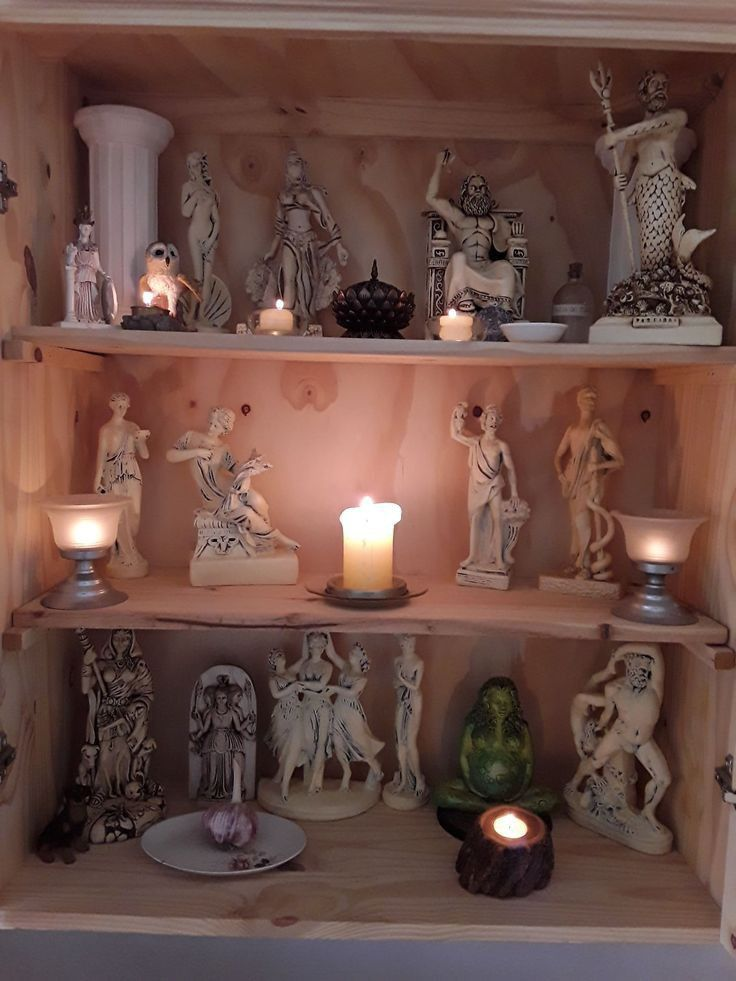

Cultura Griega 💖
Me gusta mucho el tema de la mitología griega y las religiones que la practican.
He leído uno que otro libro relacionado con la mitología, y también me interesa sobre los filósofos de esa época, sus ideologías, teorías y demás aportaciones.
Mitología
Desde la preparatoria surgió mi interés por la mitología griega. Al inicio comencé investigando quiénes eran los titanes, dioses, semidioses, ninfas, etc.
Al principio no conocía la diferencia entre cada uno, pero con el tiempo y la investigación fui comprendiendo, más o menos, el rol que desempeñaba cada ser.
Sinceramente, mi interés va más enfocado en lo que son los dioses. Los que más me han llamado la atención son:
- Hades → Dios del Inframundo
- Atenea → Diosa de la sabidura
- Hermes → Dios mensajero
Religión
En las vacaciones de verano me puse a investigar sobre la religión que rinde culto a los dioses griegos.
Se llama helenismo, y sus practicantes son politeístas; esto significa que creen en la existencia de varios dioses o divinidades.
No soy practicante de esa religión, pero me da curiosidad saber cómo funciona.
